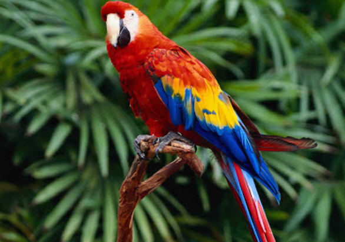

(백엔드 애들이 받아올 사용자 아이디)님 로그아웃

· 이름 : 앵무새(Black mamba)
· 수명 : 6~15년
· 크기 : 12~20cm
· 먹이 : 과일, 채소,곡류, 벌레, 펠렛(사료)
· 서식지 : 산림
콩고 민주 공화국,르완다, 부룬디에 서식하며 일부는 남아프리카에서도 서식
· 부연 설명 : 다양한 섬에서 분포하는 새. 깃털의 경우 색이 아주 화려하고 다양하다.
부리는 아주 강하고 갈고리처럼 밑으로 굽어져 있으며 군집생활(함께 지내는)을 한다.
한 번에 1개에서 12개까지의 알을 낳으며 나무에 있는 구멍을 둥지로 사용한다.
· 수명 : 6~15년
· 크기 : 12~20cm
· 먹이 : 과일, 채소,곡류, 벌레, 펠렛(사료)
· 서식지 : 산림
콩고 민주 공화국,르완다, 부룬디에 서식하며 일부는 남아프리카에서도 서식
· 부연 설명 : 다양한 섬에서 분포하는 새. 깃털의 경우 색이 아주 화려하고 다양하다.
부리는 아주 강하고 갈고리처럼 밑으로 굽어져 있으며 군집생활(함께 지내는)을 한다.
한 번에 1개에서 12개까지의 알을 낳으며 나무에 있는 구멍을 둥지로 사용한다.